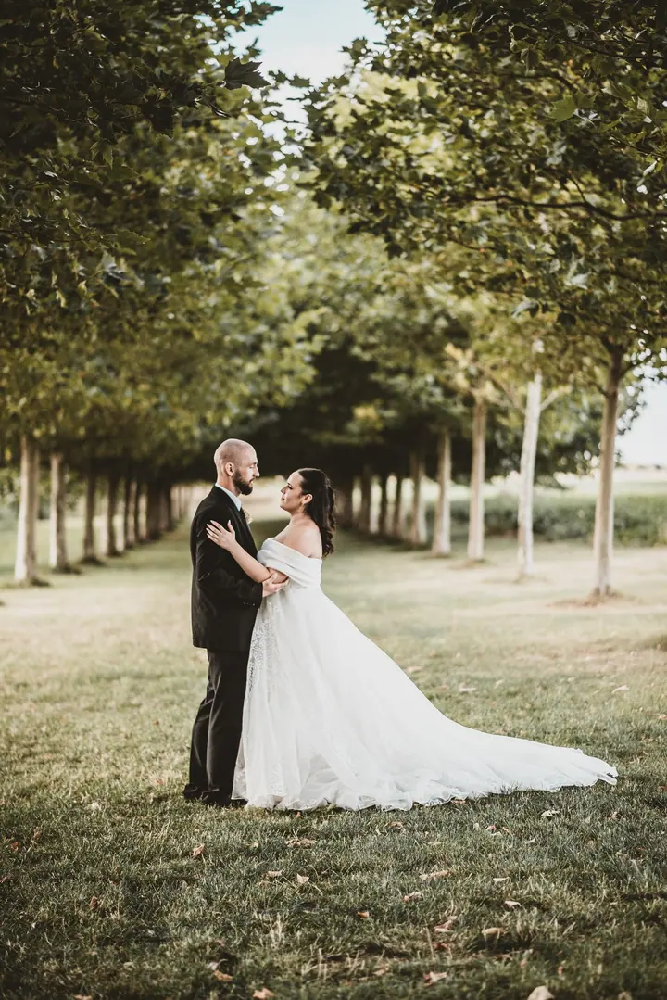
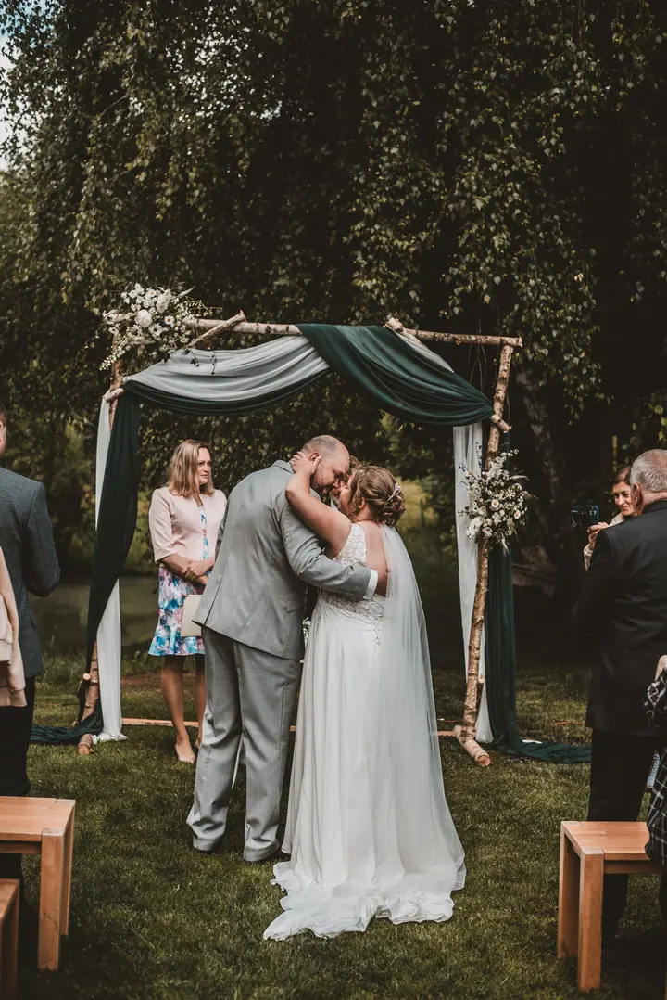
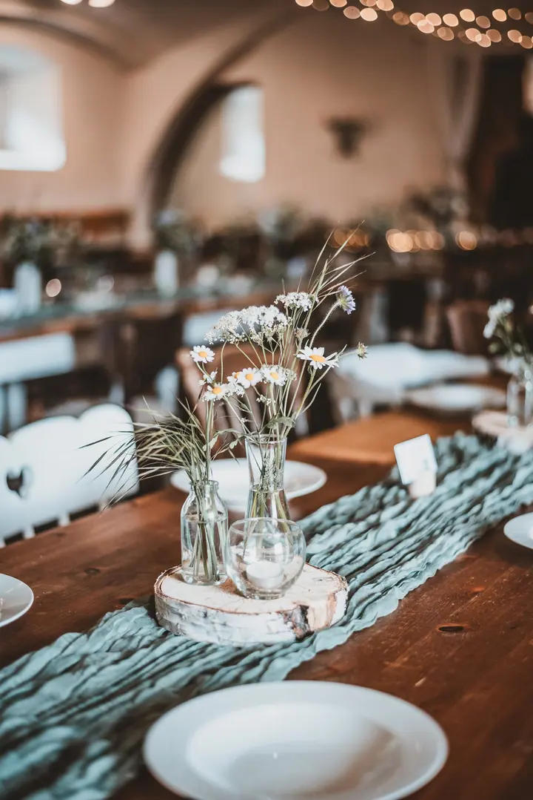

Svatební focení
Od ranních příprav přes tradice až po první polibek. Z celodenního focení dostanete nejméně 500 upravených fotek a cena se odvíjí od času, který spolu na svatbě strávíme.

Jmenuji se Barbora Güntherová, jsem mladá fotografka původem z Trutnova a dnes se pohybuji hlavně v Praze. Začínala jsem focením čtyřnohých parťáků, dnes fotím všechno o…
Rezervovat termínFoťák je můj parťák už několik let. Začínala jsem u psů a koní a postupně jsem se dostala k lidem, párům a rodinám. Fotím na trase z Trutnova do Prahy a v okolí obou měst, občas i v Plzni, a po domluvě ráda dojedu i dál.


K focení svateb jsem se dostala spíš náhodou, v létě 2024. Počáteční nervozitu ale rychle vystřídalo nadšení z emocí, které jsem ten den mohla sledovat, z velké důvěry, které se mi dostalo, a hlavně z fotek, které mě nesmírně bavilo tvořit.
Teď pracuji na rozšíření svatebního portfolia a budu moc vděčná, pokud se budu moct objevit právě na té vaší. Věřím, že spolu zaznamenáme ty nejlepší vzpomínky, od ranních příprav až po první polibek.
Co fotím
Od ranních příprav přes tradice až po první polibek. Z celodenního focení dostanete nejméně 500 upravených fotek a cena se odvíjí od času, který spolu na svatbě strávíme.
Hlavně psí kámoši, ale i další zvířata. Právě focením čtyřnohých parťáků jsem začínala.
Ježdění, mazlení a přirozené okamžiky s vaším koněm. Fotím venku v lese, na jízdárně i na kolbišti.
Dvojice, děti a rodiny. Fotím vás s vaší drahou polovičkou, s dětmi, nebo jen proto, že chcete mít hezkou fotku sami sebe.
Postup
Napište mi nebo zavolejte, kdy a kde se berete. Cena se odvíjí hlavně od času stráveného na svatbě a od dopravy, takže vám pošlu kalkulaci přímo pro váš den.
Jestli se chcete poznat ještě před svatbou, vyrazíme spolu na procházku jako na klasické párové focení. Když u vás fotím i svatbu, máte ho o 30 % levněji.
Jsem s vámi od ranních příprav přes obřad a tradice až po oslavu. Ráda poradím, kam se postavit, a jinak nechávám prostor přirozeným chvílím.
Ukázku fotek posílám do tří dnů od svatby a další fotky průběžně nahrávám do zaheslovaného alba na Zoneramě. Celé album je hotové do měsíce od uhrazení svatby.
Otázky
Záleží na délce focení. Z celodenního focení (zhruba 8 až 10 hodin) garantuji nejméně 500 odevzdaných fotek, většinou jich ale bývá víc. U kratšího focení se počet domluvíme podle délky.
Ukázku posílám do tří dnů od svatby, pak fotky průběžně přibývají v online galerii. Celé album dokončím do měsíce od uhrazení svatby, takže většinu fotek máte výrazně dřív.
Online, v zaheslovaném albu na Zoneramě. Přístup má jen ten, komu pošlete odkaz a heslo, a fotky si můžete neomezeně stahovat v plné kvalitě.
Nejčastěji fotím v Praze a okolí a na Trutnovsku, vzdálenější svatby jsou na domluvě. Zálohu zatím nevybírám, do budoucna ale plánuji její zavedení.